SIPDMS
Système Intelligent de Prévention de la Délinquance en Milieu Scolaire
De signaux dispersés à des situations comprises, pour permettre une intervention humaine plus précoce.
Collège Adventiste de Yaoundé, Terminale C, 2026–2027. Équipe : Bohol, See, Djeugoué, Adzengue, Ntiam. Encadrement : Mr Wanki.
Explorer le projet
Le cas concret
Une bagarre derrière le bâtiment B : ce que SIPDMS fait avant, pendant et après.
Fonctionnement
Où intervient l'IA, les canaux sans téléphone, le calculateur de priorité.
La preuve
Un lycée simulé, trois configurations comparées, des limites assumées.
Éthique et cadre légal
Ce que nous collectons, ce que nous ne collectons pas, les lois.
FAQ du jury
Quinze questions difficiles, des réponses courtes.
Annexes
Charte d'usage, mini-enquête, fiche de test, guide de soutenance.
Glossaire
Les mots techniques expliqués simplement.
Sources
Références et textes de loi.
Documents
Les deux dossiers Word à télécharger : synthèse et complet.
Prototype pédagogique, données fictives. Sur le lycée simulé, la corrélation fait passer la précision de 46 % à 77 %. Détails et limites dans La preuve.
→Comment SIPDMS prévient : le cas d'une bagarre derrière le bâtiment B
Imaginons des élèves qui se rassemblent derrière le bâtiment B, à la récréation de midi, et une bagarre qui éclate. SIPDMS n'a pas de boule de cristal : il agit à trois moments, et un adulte décide à chacun.
Avant : repérer ce qui se prépare
Les jours précédents, des signaux faibles s'accumulent : un banc cassé, un mur tagué, un papier dans la boîte (« Ils recommencent encore à la sortie »), une observation d'un surveillant, un attroupement signalé vers 13 h. Chacun semble anodin. SIPDMS les relie par lieu (bâtiment B), créneau (midi), contenu, répétition et indépendance (au moins deux sources distinctes).
La direction reçoit des recommandations non punitives : renforcer la présence adulte autour du bâtiment B entre 12 h 45 et 13 h 30, améliorer l'éclairage, modifier un flux de circulation, proposer une médiation, échelonner les sorties. Puis on mesure : incidents avant/après, comparés à une zone témoin.
Pendant : la voie rapide
Si la bagarre éclate, une urgence ne doit pas attendre la corrélation. Un élève à la borne, un enseignant ou un surveillant signale (« bagarre », « arme », « blessé » : mots d'urgence repérés par le moteur de règles, y compris en anglais et en français familier). Le triage envoie le signal vers la voie rapide : le surveillant est alerté tout de suite avec quoi, où, quand.
La caméra reste une extension avancée (V5), jamais le cœur : sans reconnaissance faciale, traitée sur place, elle ne produirait qu'un événement anonymisé (« 13 h 05, zone B, regroupement inhabituel, 12 personnes »). Elle exigerait un cadre juridique et l'accord de l'établissement et des parents.
Après : aider, comprendre, corriger
Parcours d'aide ouvert pour la victime : écoute par un adulte formé (code de suivi si l'élève veut rester anonyme), protection immédiate sans fuite ni représailles, médiation ou accompagnement, suivi à deux semaines.
L'adulte qualifie l'alerte (pertinente, fausse, à surveiller, insuffisamment documentée) : les seuils se calibrent. L'incident enrichit l'historique du lieu et du créneau, pas celui d'un élève : aucun score, aucune liste, aucune sanction automatique.
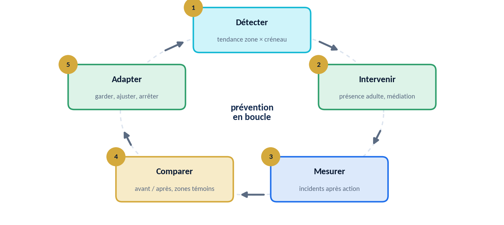
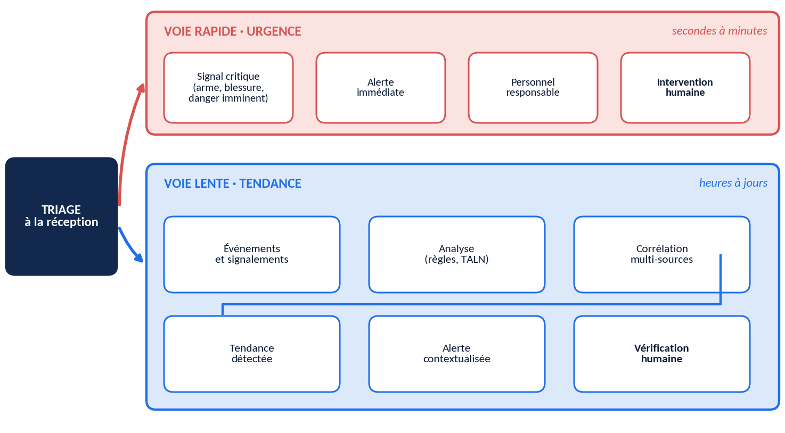
1Approfondir le fonctionnement
Le problème d'information
Chaque adulte détient une pièce du puzzle ; personne n'a le puzzle entier, et quand il apparaît c'est souvent trop tard. Délinquance ≠ infraction au règlement : un retard isolé ne produit rien ; dix sorties non autorisées par la même porte renseignent sur la porte, pas sur dix élèves.
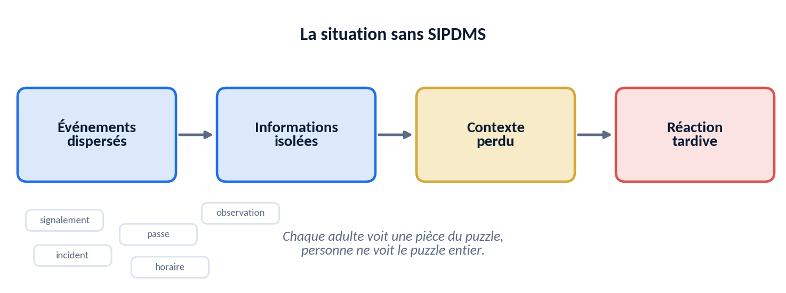
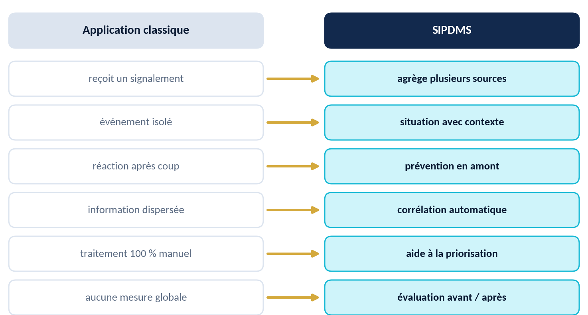
Conçu pour un collège sans téléphones
Tout passe par du matériel de l'école ou des canaux hors temps de classe. À chaque signalement, l'élève reçoit un code de suivi papier pour lire la réponse et répondre, sans révéler son identité. La borne est placée dans un lieu très fréquenté et neutre, hors du champ de vue des adultes concernés ; le personnel voit un créneau, jamais une heure précise.
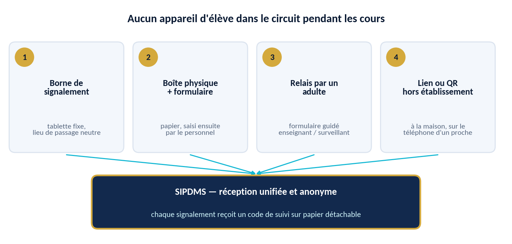
Où intervient l'IA
- Moteur de règles (sans IA)
- Pass trop long, mot d'urgence, seuil dépassé : explicite, vérifiable, prévisible.
- TALN
- Extrait type de situation, lieu et créneau de textes libres en français, anglais ou français familier.
- Similarité sémantique
- Un embedding rapproche « On m'insulte souvent près du bâtiment B » et « Ils recommencent encore à la sortie » sans mot en commun (Reimers et Gurevych, 2019 ; 2020).
- Analyse temporelle et spatiale
- Les incidents se concentrent souvent dans peu de lieux (Weisburd, 2015) : hypothèse à tester, pas un acquis.
- Détection d'anomalies
- Zone ou créneau qui s'écarte de son fonctionnement habituel (Chandola, Banerjee et Kumar, 2009).
- Corrélation multi-sources
- Le cœur : fusionner signalement, lieu, créneau, autorisation et historique.
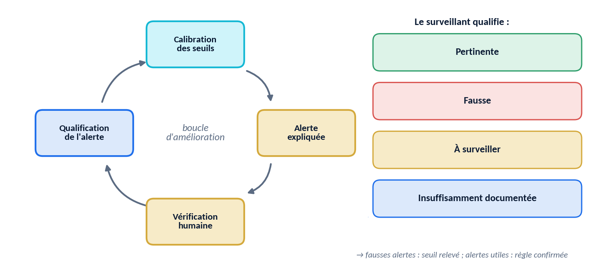
Calculateur : priorité de situation
Priorité de situation = gravité × (répétition + indépendance des sources + concentration lieu-créneau). Elle porte sur un triplet lieu · créneau · type de situation, jamais sur une personne. Essayez (valeurs illustratives).
Normaliser par le niveau d'observation
Taux normalisé = incidents signalés ÷ niveau d'observation de la zone. Sans cela, un coin très surveillé paraît « dangereux » parce qu'on y regarde (Lum et Isaac, 2016).
Prévention, mesure, rôles
Pistes supplémentaires : sensibilisation ciblée sans désigner de personnes ; réaménagement d'un espace ou d'un horaire. Deux idées pour aller plus loin : un simulateur « et si ? » (hypothèse explicite et modifiable, pas une prédiction) et une enquête de climat scolaire avant/après. Trois rôles : élève (signaler, suivre, demander de l'aide), surveillant (vérifier, intervenir, qualifier), direction (tendances agrégées, cartes, effet des actions) ; extensions : enseignant et administrateur.
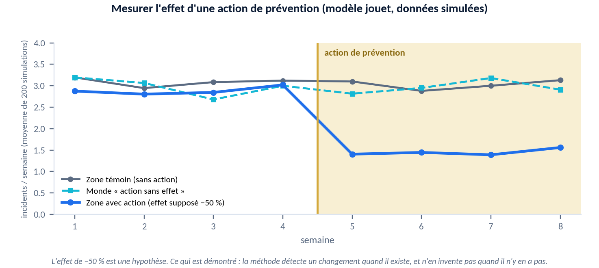
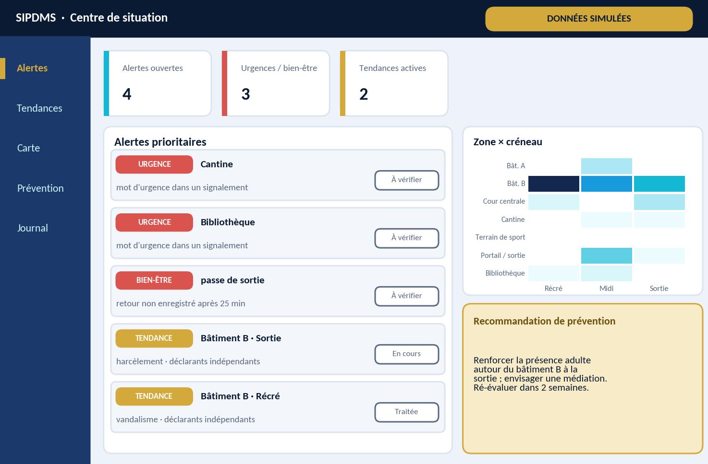
Faisabilité et roadmap
Python, pandas, scikit-learn, embeddings pré-entraînés ; serveur local sans dépendre d'Internet, procédure papier en cas de coupure ; cinq pôles (interface et collecte · règles et passes · TALN et similarité · corrélation et données simulées · évaluation, éthique, rédaction). Démo de 5 minutes : un signalement à la borne, la tendance détectée avec ses raisons, la carte de chaleur, puis un pass resté ouvert. Du V0 au V5, avec un pilote en « mode ombre » avant tout usage réel.
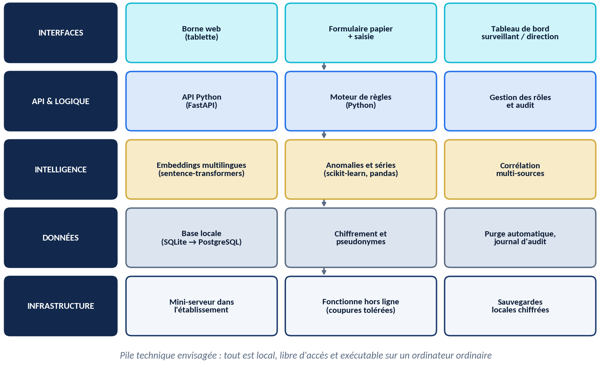
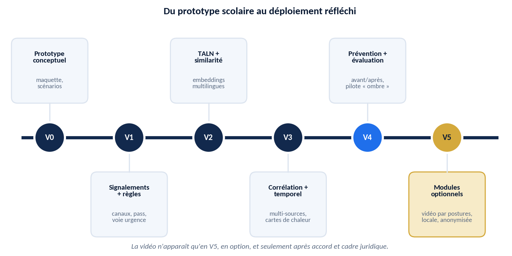
2La preuve, sans la surestimer
Lycée simulé : 20 jours, 7 zones, environ 60 signalements, 300 passes, 13 situations de vérité connue (3 harcèlements, 2 vandalismes, 4 urgences, 4 bien-être) et du bruit réaliste dont 2 campagnes malveillantes. Catégorie correcte dans 60 % des cas, zone dans 70 %. Textes : français 60 %, anglais 20 %, familier 20 %.
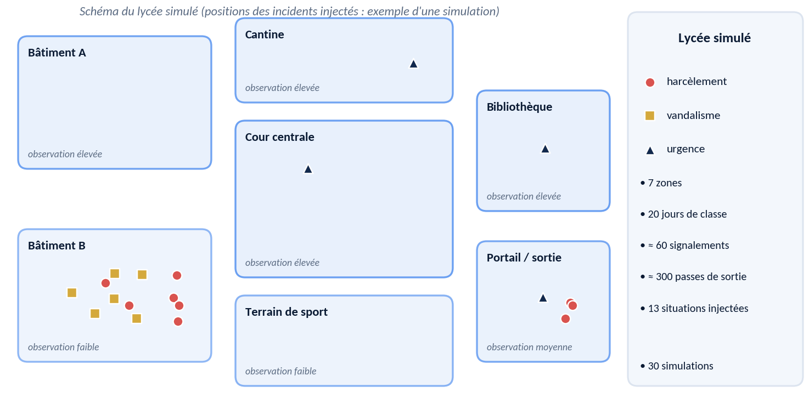
| Configuration | Précision | Détection | Fausses alertes / sem. | Délai (j) |
|---|---|---|---|---|
| A · Règles seules | 46 % ± 5 | 67 % ± 13 | 2,3 ± 0,1 | 1,9 ± 0,9 |
| B · + TALN | 55 % ± 3 | 96 % ± 6 | 2,5 ± 0,2 | 1,8 ± 0,7 |
| C · + corrélation | 77 % ± 6 | 95 % ± 6 | 0,9 ± 0,3 | 1,6 ± 0,8 |
Le TALN améliore la détection ; la corrélation améliore la précision ; le délai varie peu et nous ne revendiquons aucun gain de rapidité. Mini-test humain : 3 à 5 personnes, résultats à compléter.
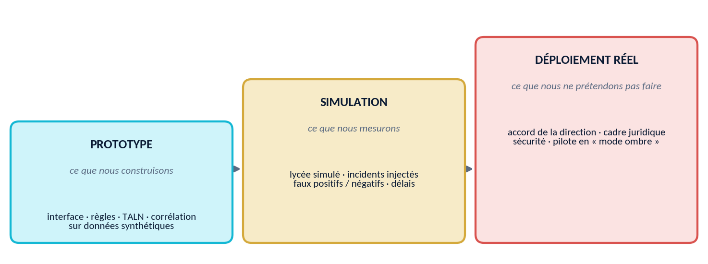
3Éthique, limites, cadre légal
Conservation courte fixée par la direction (purge des dossiers classés après un trimestre, à valider). Cadre : loi n° 2024/017 du 23 décembre 2024 (données personnelles) et loi n° 2010/012 du 21 décembre 2010 (cybersécurité). Nous ne sommes pas juristes : validation par un conseil juridique avant tout déploiement.
Limites : prototype et résultats simulés ; le langage reste difficile ; seuls les signalements remontent ; faux positifs et négatifs ; charge pour le personnel ; la technologie ne remplace pas la relation.
4FAQ du jury
Pourquoi utiliser l'IA ?
Certains problèmes sont difficiles à la main : rapprocher des textes formulés différemment, repérer une répétition dans le temps et l'espace. Le pass de sortie reste un simple moteur de règles.
Pourquoi pas simplement un formulaire ?
Un formulaire recueille, il ne relie pas. Sans analyse du texte libre, un tiers des situations échappe aux règles seules ; sans corrélation, les fausses alertes restent élevées.
Comment éviter les faux signalements ?
Une alerte de tendance exige au moins deux sources indépendantes ; elle porte sur un lieu et une situation, et un adulte vérifie.
Comment éviter les biais ?
Normalisation par le niveau d'observation, suivi des fausses alertes par zone, aucun profil d'élève.
Pourquoi pas la reconnaissance faciale ?
Elle identifierait des mineurs, ouvrirait la porte au profilage et n'est pas nécessaire : nous comprenons des situations, nous n'identifions pas des personnes.
Et si un élève n'a pas de téléphone ?
Aucun élève n'en a besoin : borne, boîte papier et relais par un adulte suffisent.
Comment ça marche si les téléphones sont interdits ?
Matériel de l'école ou canaux hors temps de classe ; suivi par code papier. C'est une contrainte de conception.
Réalisable par des élèves de Terminale ?
Un prototype, oui ; un système industriel, non.
Quelles données utilisez-vous ?
Synthétiques dans le prototype ; le strict minimum en déploiement.
Comment protégez-vous les mineurs ?
Minimisation, aucune identité de déclarant, pas d'image, rôles, journal d'audit, conservation limitée, validation juridique.
Qui décide ?
Toujours un adulte : SIPDMS propose, le surveillant vérifie, la direction décide.
SIPDMS peut-il sanctionner ?
Non : ni sanction ni score individuel ; une alerte ne vaut pas preuve.
Comment prouvez-vous l'apport de l'IA ?
Trois configurations sur un lycée simulé : le TALN améliore la détection, la corrélation la précision. Résultats de simulation.
Comment mesurez-vous la prévention ?
Avant/après avec zones témoins et enquête de climat anonyme si la direction l'autorise.
Si le système se trompe ?
L'alerte invite à vérifier ; l'adulte la qualifie, ce qui calibre les seuils ; les raisons sont affichées et l'historique tracé.
5Annexes
A · Charte d'usage
- Une alerte est une invitation à vérifier, jamais une preuve.
- J'utilise SIPDMS pour protéger et prévenir, jamais pour punir automatiquement.
- Je ne cherche pas à identifier qui a signalé et ne transmets l'alerte à personne de mis en cause.
- Je ne constitue aucun classement, score ou liste d'élèves.
- Je qualifie chaque alerte traitée.
- Je ne consulte que le nécessaire à mon rôle ; mes consultations sont journalisées.
- Je protège la confidentialité et signale toute fuite.
- Je respecte les durées de conservation et la purge.
- Je décide en humain : dialogue, écoute, médiation avant toute sanction.
- J'accepte l'audit et la suspension de l'usage en cas de dérive.
B · Mini-enquête anonyme
Avec l'accord écrit de la direction, volontariat, sans nom. Réponses : jamais / une fois / plusieurs fois ce mois.
- Je me suis senti(e) en insécurité dans un lieu de l'établissement. Lequel ?
- On m'a insulté(e) ou humilié(e) de façon répétée par d'autres élèves.
- On m'a pris de l'argent ou des affaires par la force ou la menace.
- J'ai été témoin d'une situation grave et je n'ai pas osé en parler.
- Je saurais à qui m'adresser si j'avais un problème (oui / non / peut-être).
- Je ferais confiance à un système de signalement anonyme (oui / non / peut-être, pourquoi ?).
C · Fiche de passation du mini-test
3 à 5 personnes, trois dossiers fictifs aux traces dispersées. Tâche : retrouver quoi, où, quand, quels événements liés.
- Expliquer la tâche.
- Méthode manuelle sur l'incident 1 : chronométrer, noter.
- Méthode SIPDMS sur l'incident 2 : chronométrer, noter.
- Alterner l'ordre entre participants.
- « Avez-vous compris pourquoi l'alerte est apparue ? » (oui / en partie / non).
Test indicatif, pas statistique.
D · Guide de soutenance (10 min)
| Min | Séquence |
|---|---|
| 0–1 | Le problème : « chaque adulte voit un morceau » |
| 1–2 | Délinquance ≠ infraction ; aucun score |
| 2–3 | Observer, comprendre, relier, prioriser, alerter, vérifier, prévenir |
| 3–6 | Démo : harcèlement, vandalisme, pass |
| 6–8 | La preuve et ses limites |
| 8–9 | Éthique et limites |
| 9–10 | Conclusion |
Réflexes : distinguer prototype / simulation / déploiement ; l'humain décide ; « nous ne l'avons pas mesuré, voici comment nous le ferions ».
F · Reproduire l'expérience
python simulation.py génère le lycée simulé et lance les 3 configurations sur 30 simulations (graines 1000 à 1029). Esquisse V2, non évaluée :
from sentence_transformers import SentenceTransformer, util
model = SentenceTransformer('paraphrase-multilingual-MiniLM-L12-v2')
a = "On m'insulte souvent près du bâtiment B."
b = "Ils recommencent encore à la sortie."
score = util.cos_sim(model.encode(a), model.encode(b))6Glossaire
- TALN / NLP
- Méthodes pour traiter du texte écrit.
- Embedding
- Phrase représentée par des nombres ; sens proche = nombres proches.
- Similarité sémantique
- Proximité de sens entre deux textes.
- Corrélation multi-sources
- Rapprochement d'informations de sources différentes.
- Moteur de règles
- Règles écrites à l'avance (si… alors…), sans apprentissage.
- Détection d'anomalies
- Repérage de ce qui s'écarte du fonctionnement habituel.
- Faux positif / négatif
- Alerte à tort / situation réelle non détectée.
- Précision / rappel
- Part des alertes justifiées / part des situations détectées.
- Normalisation
- Division par un niveau de référence pour comparer équitablement.
- Mode ombre
- Fonctionnement en parallèle, sans conséquence.
- Données synthétiques
- Fabriquées par programme ; ne décrivent aucune personne réelle.
7Sources
UNESCO (2019). Behind the numbers: Ending school violence and bullying. unesdoc.unesco.org
Analyse multi-pays GSHS 2010–2017, 11 pays, prévalence 38,8 %. PMC8252267
Violences genrées en milieu scolaire au Cameroun (2015–2024), European Scientific Journal, 2025. eujournal.org
Cameroon Tribune (2022). Violences en milieu scolaire : la cote d'alerte !
Loi n° 2024/017 du 23 décembre 2024. juriafrica.com · Loi n° 2010/012 du 21 décembre 2010.
Reimers et Gurevych (2019 ; 2020) · Chandola, Banerjee et Kumar (2009) · Weisburd (2015) · Lum et Isaac (2016) · OMS (2016), INSPIRE.
↓Documents à télécharger
Les deux versions du dossier, au format Word : la version condensée, pensée pour la relecture rapide, et le document complet avec toutes les annexes, le glossaire, les références et le code.
Le dossier complet comprend les six annexes, le glossaire, les sources et l’esquisse du code.